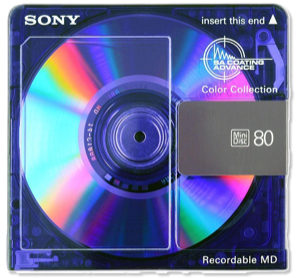
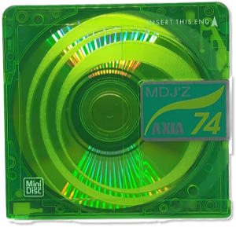

Eighteen projects,
one screen.
The list isn't too long because of taste. It's too long because the right column is pinned to the viewport height, and your own lista projetos note has nine more things waiting to go on it.
Three problems, and only one of them is about space
The wall is arithmetic
.rightColumn is max-height: calc(100vh - 2rem) and bottom-aligned, so the list can never scroll — it can only overflow. Eight items already fill it on a laptop. The backlog in lista projetos holds nine more (Metro status device, the Digital Traces paper, the Culturgest debate, five political articles), and Tele-textual makes eighteen. There is no type size at which eighteen wrapping rows fit. Compactness isn't a preference here, it's forced.
The categories mix two axes
Ensaios Visuais and Artigos sort by form. Publicações Académicas sorts by venue. That single inconsistency is the source of both symptoms you noticed: the Feedzai post sits under Ensaios Visuais even though it's a written article about a visualisation, and Tele-textual has no home because it's a form none of the three names — it isn't an essay, a paper, or an article. It's an installation.
The titles are already carrying the metadata
Four of eight titles end in | Público, | Feedzai Techblog, | Fundação Francisco Manuel dos Santos. That is the "type of project" information you're asking for — it's present, just stored in the wrong slot, where it's also what pushes rows to two and three lines. Move it out and rows collapse to one line each, for free.
Today
Hover the rows — the preview fires in the left column, as on the live site.

Ensaios Visuais
Publicações AcadémicasEight items, fourteen lines. Six of the eight rows wrap. Three section headers cost another three lines plus their margins. The column is full.
Give every project one line
Pull the venue out of the title into a metadata span, add the year, let the row be a single baseline. Nothing about the structure changes — same three sections, same order — but fourteen lines become eight.
Same eight projects, eight lines. The venue now reads as venue, the year gives the list a spine, and the row is scannable in one pass instead of parsed.
~40% of the vertical budget back, and the "type of project" label you asked for, at no extra cost.
Long titles must be trimmed or truncated. Media's role in normalizing the far right: evidence from Spain and Portugal loses its subtitle in the row — it can live in the hover preview instead.
Two shelves, not three categories
Sort on one axis only: things you made and things you wrote. What used to be a section name becomes a tag on the row — so ensaio visual, académico and opinião survive as labels, and stop being containers that have to hold things they don't describe.
This is the move that fixes the Feedzai misfile (it's a text, so it goes in Textos, tagged técnico) and the one that makes room for Tele-textual — and for the Metro device, and the Culturgest debate, and the five political articles still in your notes.
Thirteen projects in the space eight used to need — and the third minidisc is now free for a Conversas shelf when the Culturgest debate and the workshops go up.
One consistent axis. Every future thing you make has an obvious shelf — including the ones that are neither essays nor articles.
Ensaios Visuais stops being a headline. If that name is part of how you see the work, this is the move to skip — or keep three shelves as Ensaios / Textos / Outros and accept the axis is still bent.
Let the layout say what's flagship
Three or four projects get a line of description and room to breathe. Everything else is a dense index underneath, with the tail folded behind one line. A visitor who reads only the top of the column still sees your best work — which is the actual job of the page.
The fold is real — click "mais 5 ↓". Eighteen items fit here without the column ever overflowing, because only eleven are visible at rest.
Unlimited runway. The archive can grow forever without touching the first screen.
You must decide what's flagship, and re-decide it each time you publish something good. Three is the right number; four is the limit.
A star will collide with your trophies
You already have an award vocabulary: .honor renders 🏆 in gold on Ruas do Género. A gold ★ next to it reads as a second, weaker award — not as "this is one of my main projects". The flagship marker has to be visually unrelated to that gold.
Try each one against the real list:
The bubble. It's already your mark — it's in the CV/LinkedIn/E-mail cluster, in the favicon, in the OG image. Reused at 0.55rem beside a title it reads as yours rather than as a generic rating, it can't be confused with the gold trophy, and it costs no new asset. Weight only is the honest runner-up and the most restrained option; it just doesn't survive being scanned quickly. A star is the one I'd avoid, for the collision above.
It goes in Projetos, at the top, as a flagship
Tele-textual is the clearest evidence that the current categories are wrong rather than that the project is awkward. It isn't an ensaio visual — it makes no argument and it isn't journalism. It's a participatory installation with an archive, a collective viewing mode and an editor. Under today's three headings it can only be misfiled; under Projetos it's simply the newest and largest thing you've built.
It also belongs in the same tier as Constelações for a structural reason: both have a second life off the browser — Constelações became printed walls, Tele-textual is built to be shown in a room. That's a real shared property, and a Projetos shelf with an instalação / exposição tag expresses it without needing its own category.
Two more things it needs
It should be a data-modal project, like Constelações — the collective-room idea takes more than one line to land, and a visitor who goes straight to teletext.joaobernardo.me without it arrives at a black screen with no context. Which means you need both a short hover line and a longer modal one. Drafted from your own ABOUT.md:
Uma instalação participativa construída sobre o arquivo do teletexto português.
A participatory installation built on the Portuguese teletext archive.
Una instalación participativa construida sobre el archivo del teletexto portugués.
Páginas de teletexto recuperadas do Arquivo.pt — notícias, meteorologia, lotaria, horóscopos — devolvidas a um ecrã. Podes ver sozinho ou abrir uma sala: todos veem a mesma página ao mesmo tempo, e mudar de página é uma votação. E há um editor, para fazer páginas novas dentro das mesmas restrições: 40×24, oito cores, gráficos em mosaico.
Teletext pages recovered from Arquivo.pt — news, weather, the lottery, horoscopes — put back on a screen. Watch alone, or open a room: everyone sees the same page at the same moment, and changing it is a vote. There's an editor too, for making new pages under the same constraints: 40×24, eight colours, mosaic graphics.
Páginas de teletexto recuperadas de Arquivo.pt — noticias, meteorología, lotería, horóscopos — devueltas a una pantalla. Puedes verlas solo o abrir una sala: todos ven la misma página al mismo tiempo y cambiarla es una votación. También hay un editor, para crear páginas nuevas con las mismas restricciones: 40×24, ocho colores, gráficos en mosaico.
The second thing is a thumbnail — there isn't one in assets/images/thumbnails/. A page 100 index screen would do the job, and it's the one preview on the site that could be rendered in HTML rather than shipped as a PNG. That's the stand-in you're hovering in the mockups above.
Move 1, then 2, then 3 — in that order
Move 1 is free. It's a find-and-replace across three language files plus about twenty lines of CSS, it doesn't commit you to any taxonomy, and it buys back nearly half the column on its own. Do it whether or not you do anything else.
Move 2 is the one that answers your actual question. You asked whether the categories are the best ones — they aren't, and the reason is diagnosable rather than a matter of taste. It's also the only move that gives Tele-textual a home.
Move 3 is the one to defer. With 1 and 2 done you have room for about fourteen items, so you don't need the fold yet. Add it when the political articles go up and the count crosses the teens — and by then you'll know which three projects are genuinely the flagships.
Two smaller things worth noting
The hover preview gets more important, not less. A one-line row carries less, so the left column has to carry more. With the list shorter, the right column has slack the left one doesn't — the preview is currently boxed into max-width: 22rem above the bubbles, and that's the constraint keeping descriptions to two lines. Worth revisiting once the rows are tight.
Sort by year inside each shelf. Your lista projetos note is already organised by year, which suggests it's how you think about the work. Newest first makes the list self-maintaining — new things go at the top and you never re-litigate an order.